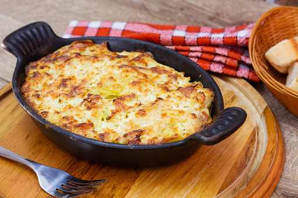

Brandade de morue
Ingrédients
- 500 g de morue salée (sous vide)
- 500 g de pomme de terre
- 1 bouquet de persil non frisé
- Huile d'olive
- Ail
- sel
- poivre
Instructions
- Faire dessaler la morue en la faisant tremper dans l'eau 36 à 48 heures avant le moment de préparer la brandade (en changeant l'eau régulièrement).
- Faire cuire les pommes de terres et les écraser à la fourchette.
- Émietter la morue dessalée et mélanger avec les pommes de terre écrasées, l'ail pilé et le persil haché.
- Ajouter petit à petit l'huile d'olive (plus il y en a plus c'est bon).
- Poivrer. Goûter et ajouter éventuellement un peu de sel.
- Mettre la purée dans un plat allant au four et faire cuire 15 à 20 min. Passer sous le grill avant de servir.
